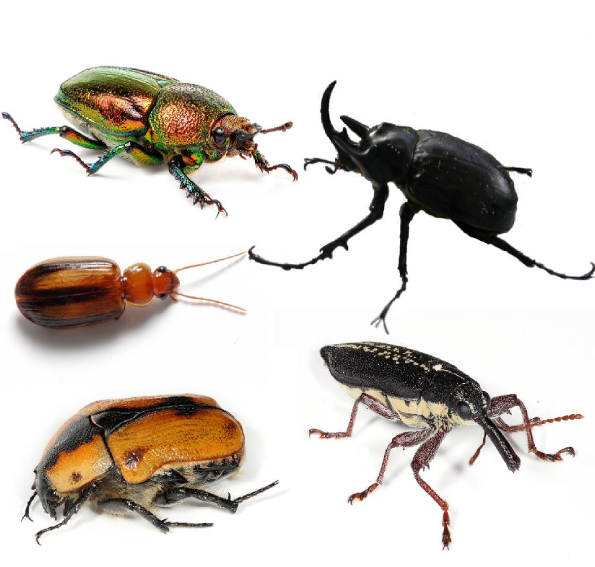
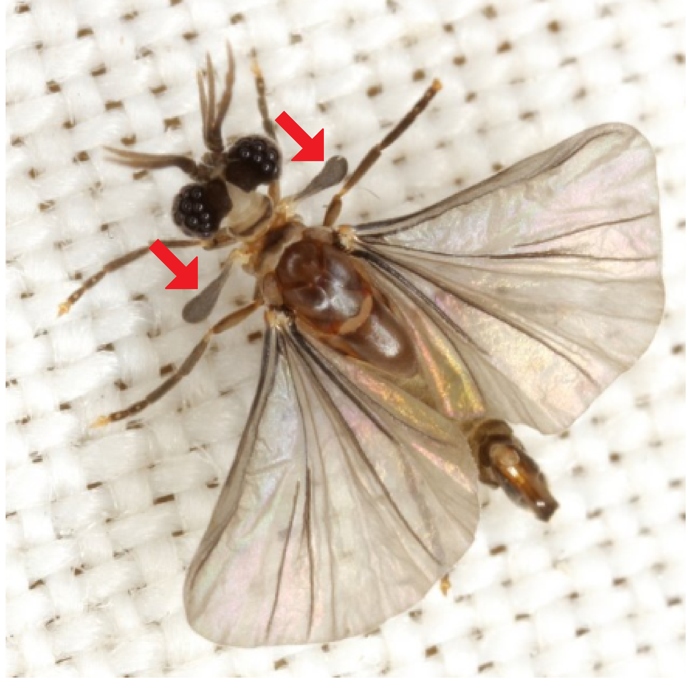

|
Coleoptera

Les coléoptères (Coleoptera) sont un ordre d'insectes dotés d'élytres protégeant leurs ailes. Le mot « coléoptère » vient du grec κολεός « fourreau » et πτερόν « aile ». Il s'agit de l'ordre qui comporte le plus grand nombre d'espèces (environ 360 000 décrites.). Beaucoup d'espèces ou des groupes d'espèces ont des noms vernaculaires bien implantés ; les scarabées, les coccinelles, les lucanes, les chrysomèles, les hannetons, les charançons, les carabes, par exemple, sont des coléoptères. Ils vivent pratiquement dans tous les biotopes, excepté les milieux polaires et océaniques. Ils possèdent en général deux paires d'ailes. La première paire d'ailes, quelquefois très colorée, appelée élytres, forme la carapace de ces insectes et la deuxième paire, les ailes membraneuses, servent au vol. |
Diptera

Les diptères ou Diptera (du grec di, deux, et ptéra, aile) sont un ordre de la classe des insectes. Il s'agit de l'un des ordres dominants en matière de nombre d'espèce. On retrouve plus de 150 000 espèces de mouches décrites1. Ce groupe comprend des espèces désignées par les noms vernaculaires de mouches, syrphes, moustiques, taons, moucherons, etc. |
Strepsiptera

Les strepsiptères sont très petits voire microscopiques, ce qui leur permet d'être des endoparasites d'autres insectes. La femelle passe ainsi toute sa vie à l'état larvaire dans le corps d'un hôte, et meurt une fois fécondée pour se laisser dévorer par sa progéniture, qui émergera ensuite sous forme larvaire, pour aller choisir un nouvel hôte. Les larves, microscopiques, sont capables de faire des bonds vers un hôte, puis de s'infiltrer entre l'endocuticule et l'épiderme, pour s'encapsuler dans un cocon de tissu de l'hôte, permettant d'outrepasser la réponse immunitaire, et de se développer aux dépens de l'insecte ainsi parasité. |